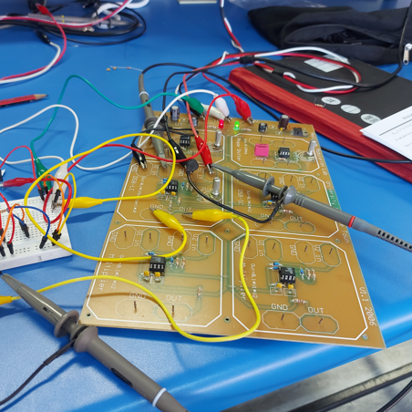

A Lot About Me
Hey There!I'm Thatohatsi Motlhamme
Final-year Mechatronics Engineering student at the University of Cape Town, driven by a passion for leveraging technology to solve complex problems. My multidisciplinary background in mechanical, electrical, and computer engineering has equipped me with a versatile skill set, including proficiency in various programming languages, circuit design, and 3D mechanical modelling. As a hardworking and enthusiastic engineer, I'm constantly motivated by the challenge of finding innovative solutions to real-world problems.
My interests in robotics, control systems, and emerging technologies like AI and machine learning are the driving forces behind my career aspirations. I'm always eager to learn and take on new challenges, whether it's exploring the latest trends in technology or diving into a new project.
My interests in robotics, control systems, and emerging technologies like AI and machine learning are the driving forces behind my career aspirations. I'm always eager to learn and take on new challenges, whether it's exploring the latest trends in technology or diving into a new project.

The best way to predict the future is to create it!
Interests
Where words leave off, music begins!
Music!I've Always Loved Music
Music is not just about vibes for me - it's where my engineering mind gets to play. I'm not just calculating filters on paper; I'm making them sing in real life. You'll catch me serving at church, making sure everything sounds heavenly on the sound team. But that's just the start. I've got my hands in music production too, cooking up tracks across different genres. And when it's time to get the party started? I'm your guy behind the decks. I've even rocked the crowd at UCT Day 2023 and other events. Oh, and instruments? Yeah, I mess around with those too - guitar, drums, piano, you name it. It's all about bringing those classroom theories to life and creating something that moves people. Whether it's tweaking EQs or laying down beats, I'm all about that perfect sound.
Web Design!Seeing Is Believing
That's where I get to see my code come to life. It's like, you know how in class we're just staring at lines of syntax? Well, I wanted to take that and turn it into something you can actually see and interact with. So, I jumped into web design, and let me tell you, it's addictive. You're typing away, and suddenly boom - you've got this whole visual thing happening right in front of you. It's so fun you don't even realize you're coding half the time. It's more like you're painting with code. One minute you're tweaking CSS, the next you're crafting these slick user interfaces. It's where coding meets art, and I'm all about that blend. Plus, it's instant gratification - you make a change, hit refresh, and there it is. It's like being a digital architect, and I'm here for it.
Painting, except the paint never dries!

Creating you own world with electricity!
Mechatronics!Well, Of Course!
It's like having a superpower. It's not just one thing, it's this whole universe of cool stuff all mashed together. I'm talking PCB design, where you're basically creating these tiny cities of electronics. Then there's circuit analysis, which is like being a detective, but for electricity. And don't even get me started on wiring and building inductors - it's like playing with the very essence of energy.
The best part? When you start putting all these pieces together. It's like being a kid with the world's coolest Lego set, except these Legos can actually do stuff. One minute you're soldering components, the next you're writing code to make them dance. And when you finally get everything hooked up and that motor starts spinning or that LED starts blinking exactly how you planned? Man, that feeling is unreal.
It's not just about making things move, though that's pretty sweet. It's about creating these systems that think and react. Sometimes I'm there, elbow-deep in wires and code, and I think, "Is this how Tony Stark felt?" Because let me tell you, when you're bringing these creations to life, it really does feel like you're some kind of tech wizard. Mechatronics isn't just an interest - it's like having the keys to reshape the world around you. And I'm here for every electrifying moment of it.
The best part? When you start putting all these pieces together. It's like being a kid with the world's coolest Lego set, except these Legos can actually do stuff. One minute you're soldering components, the next you're writing code to make them dance. And when you finally get everything hooked up and that motor starts spinning or that LED starts blinking exactly how you planned? Man, that feeling is unreal.
It's not just about making things move, though that's pretty sweet. It's about creating these systems that think and react. Sometimes I'm there, elbow-deep in wires and code, and I think, "Is this how Tony Stark felt?" Because let me tell you, when you're bringing these creations to life, it really does feel like you're some kind of tech wizard. Mechatronics isn't just an interest - it's like having the keys to reshape the world around you. And I'm here for every electrifying moment of it.